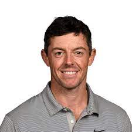

Tiger Woods

Eldrick „Tiger” Woods – amerykański golfista. Uznawany za jednego z najważniejszych przedstawicieli świata golfa. Najlepiej opłacany sportowiec na świecie z szacowanymi zarobkami 78 mln dolarów za rok 2012 oraz szósty sportowiec w rankingu najlepiej zarabiających sportowców w roku 2014 według magazynu „Forbes”
Jack Nicklaus
Jack William Nicklaus – amerykański golfista, zdobywca największej liczby tytułów w najważniejszych turniejach golfowych tzw. majors. Obecnie zajmuje się projektowaniem pól golfowych. Po przejściu lekkiej formy choroby Heinego-Medina w wieku 10 lat rozpoczął przygodę z golfem.
Rory McIlroy

Rory Daniel McIlroy MBE to zawodowy golfista z Irlandii Północnej, członek zarówno European Tour, jak i PGA Tour. Jest byłym numerem jeden na świecie w oficjalnym światowym rankingu golfa i spędził na tym stanowisku ponad 100 tygodni w swojej karierze.
Hary Vardon
Henry William Vardon był zawodowym golfistą z Jersey. Wraz z Johnem Henrym Taylorem i Jamesem Braidem był członkiem Wielkiego Triumwiratu. Vardon sześciokrotnie wygrał The Open Championship, a także wygrał US Openp w 1900 roku
Phil Mickelson
Philip Alfred Mickelson to amerykański zawodowy golfista, który obecnie gra w LIV Golf League. Wygrał 45 wydarzeń w ramach PGA Tour, w tym sześć głównych mistrzostw: trzy tytuły Masters, dwa PGA Championship i jedno Open Championship
Jordan Spieth
Jordan Alexander Spieth to amerykański golfista biorący udział w zawodach PGA Tour i były numer jeden na świecie w oficjalnym światowym rankingu golfa. Jest trzykrotnym głównym zwycięzcą i mistrzem FedEx Cup 2015. Pierwsze duże zwycięstwo Spietha miało miejsce w turnieju Masters w 2015 roku, kiedy strzelił 270.
Freddie Couples
Frederick Steven Couples to amerykański golfista, który brał udział w turniejach PGA Tour i PGA Tour Champions. Były numer 1 na świecie, wygrał 64 profesjonalne turnieje, w szczególności Turniej Masters w 1992 r. i Mistrzostwa Graczy w 1984 i 1996 r.